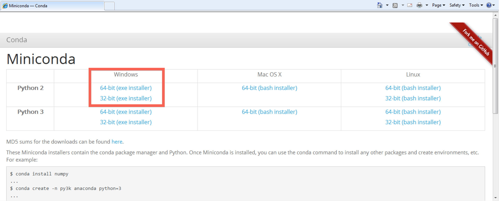
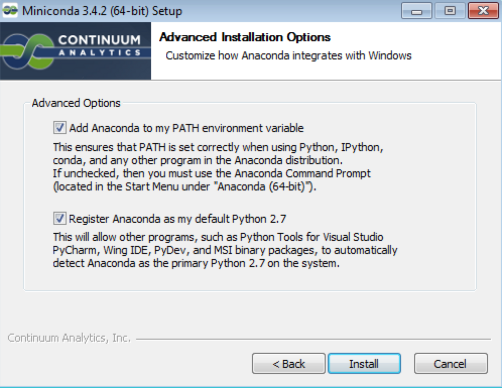
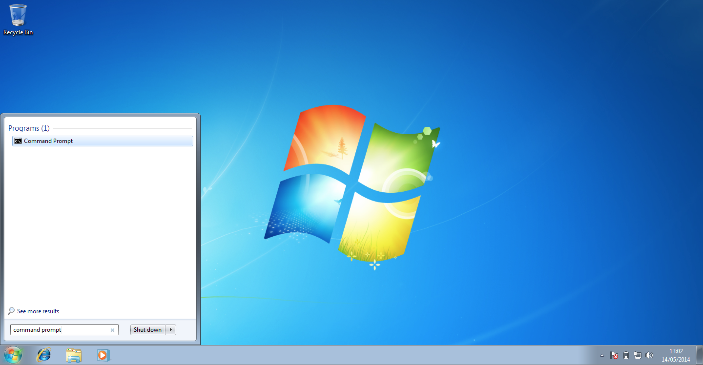
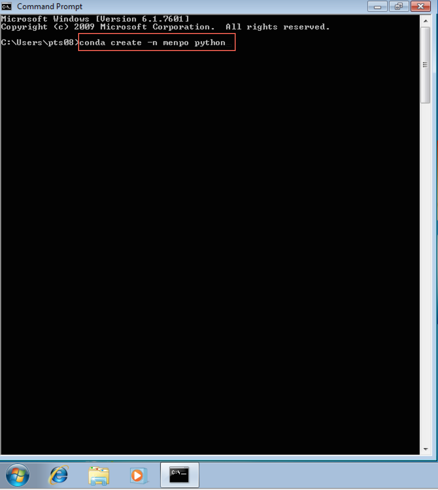
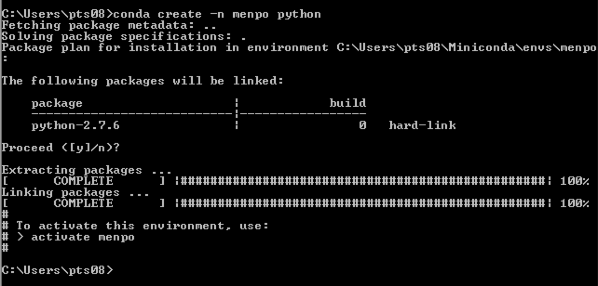
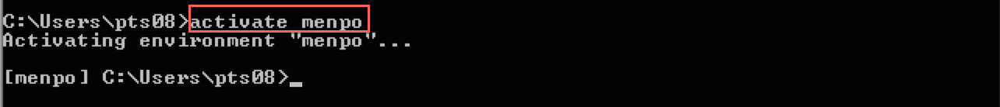
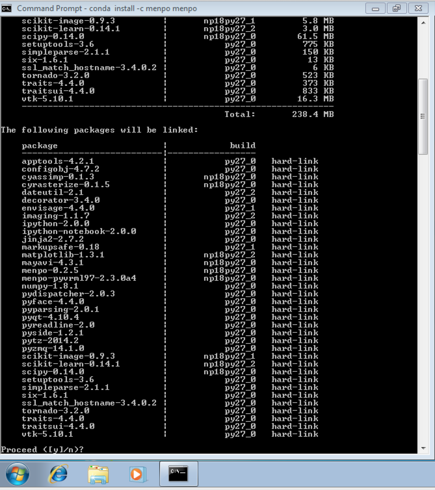
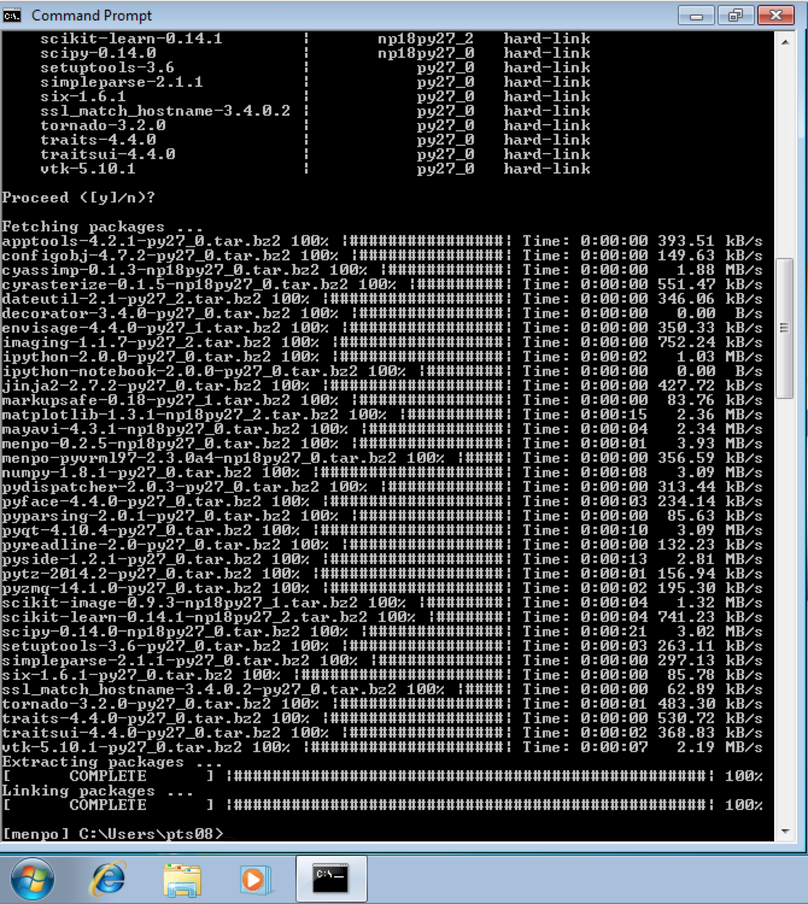

In these instructions we aim to make it very simple to install Menpo. If anything is at all unclear, please let us know on the menpo-users mailing list.
If you already have a conda environment, and consider yourself a conda expert, you may want to view the short instructions.
It is important to note that as part of the installation, you will be creating an isolated environment to execute Python inside. Make sure that this environment is activated in order to be able to use Menpo!
The installation instructions are split up in to a number of sections. Please follow them carefully, in order:
First, we need to install a Python environment. The Python environment we will use is called conda, and it is provided by an installation package called Miniconda.
Download the Python 2 copy of Miniconda for your architecture of Windows (32-bit or 64-bit). If you are unsure what version of Windows you are running, you can find out by visiting this page.

After downloading Miniconda, run the installer and click Next > on each
screen that is presented. It is particularly important that both checkboxes are
ticked on the Advanced Installation Options page as shown below:

After installing Miniconda, we should have access to two new commands within
the command prompt. Python, unlike Matlab, does not come with an integrated
development environment and so commands have to be run using the command prompt.
To continue, we need to open a command prompt, which can be found by selecting
Start and typing command prompt

We now need to create an environment to store all of our Python packages inside.
It doesn't matter what path you are inside within the command prompt, the
conda command will not create any files locally. So, we use the command
C:\>conda create -n menpo python

This will inform you that you are creating a new environment and installing
Python inside of it. The environment name is given by -n menpo (the
environment will be called menpo) and only python will be installed inside
by default.
To ensure you want to continue, Conda will prompt you
about if you wish to proceed. Press Enter to continue. Conda will create
a new environment for you and give you some information about activating
your new environment called menpo.

Now, activate the menpo environment with the command:
C:\>activate menpo

Notice that the command prompt is new prefixed with a label:
[menpo] C:\>
This let's you know that the menpo environment is enabled. It is important
to ensure that the menpo environment is activated before attempting to
use Menpo in any way!
Installing Menpo only requires a single command:
[menpo] C:\>conda install -c menpo menpo
Conda will then attempt to install all of our requirements. It appears there are many, but this is due to the minimal nature of the environment we originally created. As before, Conda will prompt you to proceed, press Enter to continue.

It may take a short time to download and install all of Menpo's dependencies, during which you will see a number of progress bars. The command is complete when the extracting and linking processes show COMPLETE.

Congratulations! You have now installed the latest version of Menpo!
In order to start using Menpo, we suggest you have a look through our collection of IPython notebooks. They can be found here. Follow the instructions there to download the notebooks and run them. If you need more help you can consult the documentation or ask for help on the menpo-users mailing list.